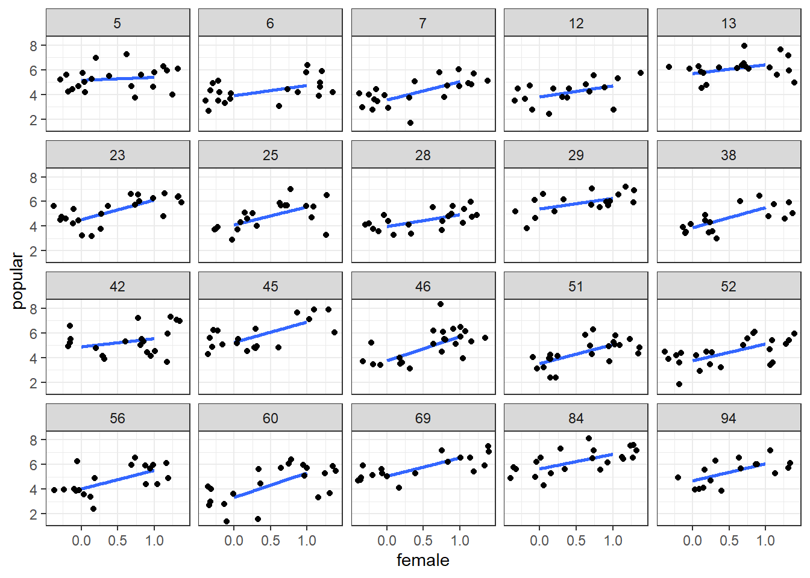

Centrado
jueves 15 octubre
Libraries
if (!require("pacman")) install.packages("pacman") #**ESTO SE DEBE CORRER UNA SOLA VEZ** (!)
pacman::p_load(dplyr, sjlabelled,summarytools, ggplot2,ggExtra,lme4,texreg)Descargar:
Contenidos ayudantía
- Centrado
- Estrategias de CEntrado
Datos
Los datos de popularidad en popular son datos simulados para 2000 alumnos en 100 escuelas. El propósito es ofrecer un ejemplo muy simple para el análisis de regresión multinivel. La principal variable dependiente es la popularidad del alumno, medida a través un índice de popularidad en una escala del 1 al 10 a través de un procedimiento sociométrico.
Por lo general, un procedimiento sociométrico pide a todos los alumnos de una clase que califiquen a todos los demás alumnos y luego asigna a cada alumno el índice de popularidad promedio recibido.
Debido al procedimiento sociométrico, los efectos de grupo como son evidentes en los componentes de varianza de nivel superior son bastante fuertes.
Hay una segunda variable de resultado: la popularidad del alumno según la calificación de su maestro, en una escala del 1 al 10.
Las variables explicativas son el sexo del alumno (hombre = 0, mujer = 1), la extraversión del alumno (escala de 10 puntos) y la experiencia del profesor en años.
Cargar Datos
popdata <- read_spss("https://jciturras.github.io/ayudantia-sol3051/data/popular2.sav")Seleccionar variables
popdata<- popdata %>% dplyr::select(pupil,class,popular,sex,extrav,texp)Descriptivos
| No | Variable | Label | Stats / Values | Freqs (% of Valid) | Graph | Valid | Missing | ||||||||||||||||||||||||||||||||||||||||||||||||||||||||||||
|---|---|---|---|---|---|---|---|---|---|---|---|---|---|---|---|---|---|---|---|---|---|---|---|---|---|---|---|---|---|---|---|---|---|---|---|---|---|---|---|---|---|---|---|---|---|---|---|---|---|---|---|---|---|---|---|---|---|---|---|---|---|---|---|---|---|---|---|
| 1 | pupil [numeric] | pupil ident | Mean (sd) : 10.6 (6) min < med < max: 1 < 11 < 26 IQR (CV) : 10 (0.6) | 26 distinct values |  |
2000 (100%) | 0 (0%) | ||||||||||||||||||||||||||||||||||||||||||||||||||||||||||||
| 2 | class [numeric] | class ident | Mean (sd) : 50.4 (29.1) min < med < max: 1 < 51 < 100 IQR (CV) : 51 (0.6) | 100 distinct values |  |
2000 (100%) | 0 (0%) | ||||||||||||||||||||||||||||||||||||||||||||||||||||||||||||
| 3 | popular [numeric] | popularity sociometric score | Mean (sd) : 5.1 (1.4) min < med < max: 0 < 5.1 < 9.5 IQR (CV) : 1.9 (0.3) | 85 distinct values |  |
2000 (100%) | 0 (0%) | ||||||||||||||||||||||||||||||||||||||||||||||||||||||||||||
| 4 | sex [numeric] | pupil sex | Min : 0 Mean : 0.5 Max : 1 |
|
 |
2000 (100%) | 0 (0%) | ||||||||||||||||||||||||||||||||||||||||||||||||||||||||||||
| 5 | extrav [numeric] | extraversion | Mean (sd) : 5.2 (1.3) min < med < max: 1 < 5 < 10 IQR (CV) : 2 (0.2) |
|
 |
2000 (100%) | 0 (0%) | ||||||||||||||||||||||||||||||||||||||||||||||||||||||||||||
| 6 | texp [numeric] | teacher experience in years | Mean (sd) : 14.3 (6.6) min < med < max: 2 < 15 < 25 IQR (CV) : 12 (0.5) | 24 distinct values |  |
2000 (100%) | 0 (0%) |
Generated by summarytools 0.9.6 (R version 4.0.2)
2020-10-15
1 Práctica
popdata$female <- as_numeric(popdata$sex) # convertir sex en numerica
ss <- sample(1:length(unique(popdata$class)), 20) # selecciona muestra de 20 cursos
#------------------------------------------------#
ggplot(popdata[popdata$class %in% ss,],
aes(female, popular)) +
geom_smooth(method=lm, se=F) +
geom_jitter() +
facet_wrap(~class, ncol=5) +
theme_bw()
Calculemos la variable centradas para género (1= mujer):
1.1 GM: centrado a la gran media
\(\beta_b= X_{ij}-\bar{X}\) = variación intra-grupos (within); donde:
\(X_ij\) = Valor observado
\(\bar{X}\) = Gran media
popdata <- popdata[order(popdata$class),]
# val observado - Gran_Media
popdata$female_gm <- popdata$female - mean(popdata$female)1.2 GC: centrado a la media grupal
\(\beta_b= X_{ij}-\bar{X_j}\) = variación entre-grupos (between), donde:
\(X_ij\) = Valor observado
\(\bar{X_j}\) = Media del grupo
#Calcular media de sex (proportion de 1) para cada grupo
popdata$meanfemale <- with(popdata, tapply(female, class, mean))[popdata$class]
# val observado - Media_Grupo
popdata$female_gc <- popdata$female - popdata$meanfemaleMotivos del centrado:
Modelo OLS en base a datos agregados, no centrados, permite estimar el efecto between.
Modelo multinivel con datos centrados en la media grupal (GC) permite estimar el efecto within.
Modelo multinivel con datos centrado en la gran media (GM) permite estimar el efecto ‘combinado’ de X.
- En este caso, el efecto de una variable no centrada es una mezcla del efecto within y between
1.3 Modelo OLS nivel agregado
Para estimar la regresión con datos agregados generamos dos variables con los promedios según curso:
female_bar<-tapply(popdata$sex, popdata$class, mean,na.rm=T)
popularity_bar<-tapply(popdata$popular, popdata$class, mean,na.rm=T)
#-------------------------------------------------------------------#
m_agg <-lm(popularity_bar~female_bar) 1.4 Modelo Multinivel sin centrar
m0 <- lmer(popular ~ female + extrav +(1|class), data=popdata)1.5 Modelo Multinivel con GC (centrado media grupal)
# Y_ij ~ X_ij_gc + (ranef|nivel2)
m1 <- lmer(popular ~ female_gc + extrav + (1|class), data=popdata)1.6 Modelo Multinivel con GM (centrado gran media)
# Y_ij ~ X_ij_gm + (ranef|nivel2)
m2 <- lmer(popular ~ female_gm + extrav + (1|class),data=popdata)screenreg(l=list(m_agg,m0, m1, m2),
custom.model.names = c("OLS","Sin centrar","Cent. Grupo","Cent. G. Media"),
include.variance = F)##
## ==========================================================================
## OLS Sin centrar Cent. Grupo Cent. G. Media
## --------------------------------------------------------------------------
## (Intercept) 3.62 *** 2.14 *** 2.76 *** 2.77 ***
## (0.18) (0.12) (0.13) (0.12)
## female_bar 2.89 ***
## (0.33)
## female 1.25 ***
## (0.04)
## extrav 0.44 *** 0.44 *** 0.44 ***
## (0.02) (0.02) (0.02)
## female_gc 1.24 ***
## (0.04)
## female_gm 1.25 ***
## (0.04)
## --------------------------------------------------------------------------
## R^2 0.43
## Adj. R^2 0.43
## Num. obs. 100 2000 2000 2000
## AIC 4958.30 4985.59 4958.30
## BIC 4986.30 5013.60 4986.30
## Log Likelihood -2474.15 -2487.80 -2474.15
## Num. groups: class 100 100 100
## ==========================================================================
## *** p < 0.001; ** p < 0.01; * p < 0.05Compare los efectos de female centrados en la media grupal y en la gran media.? A que se deben las diferencias y/similitudes entre coeficientes estimados?
1.7 Estrategias de centrado en Modelos Multinivel
1.7.1 Coeficiente de variable de nivel 1
- Es preferente el uso de GC debido a que:
- Remueve toda la variación between contenida en el predictor. Por tanto, entrega una estimación menos distorsionada de la asociación entre X e Y.
- Alternativa: se puede emplear GM (centrado gran media), pero siempre debemos incluir la media de X a nivel grupal como predictor.
1.7.2 Coeficiente de variable de nivel 2
- Estimar el efecto de una variable de nivel 2, mientras se controla por la variación within o de nivel 1: a esto se le llama “Efecto de composición”.
- Es preferible emplear GM, debido a que una variable de nivel 1 con GM, se compone por variación within y between (lo cual es altamente probable que correlacione con la variable de N2).
- Al incluir un predictor de N1 con GM, estamos controlando por dicha variación a nivel individual, es decir, controlamos por el efecto de composición.
# Y_ij ~ X_ij_gm + W_j + (1|nivel2)
m3 <- lmer(popular ~ female_gm + extrav + texp + (1|class),data=popdata)screenreg(l=list(m_agg,m0, m1, m2,m3),
include.variance = F)##
## ======================================================================================
## Model 1 Model 2 Model 3 Model 4 Model 5
## --------------------------------------------------------------------------------------
## (Intercept) 3.62 *** 2.14 *** 2.76 *** 2.77 *** 1.44 ***
## (0.18) (0.12) (0.13) (0.12) (0.17)
## female_bar 2.89 ***
## (0.33)
## female 1.25 ***
## (0.04)
## extrav 0.44 *** 0.44 *** 0.44 *** 0.45 ***
## (0.02) (0.02) (0.02) (0.02)
## female_gc 1.24 ***
## (0.04)
## female_gm 1.25 *** 1.25 ***
## (0.04) (0.04)
## texp 0.09 ***
## (0.01)
## --------------------------------------------------------------------------------------
## R^2 0.43
## Adj. R^2 0.43
## Num. obs. 100 2000 2000 2000 2000
## AIC 4958.30 4985.59 4958.30 4897.02
## BIC 4986.30 5013.60 4986.30 4930.63
## Log Likelihood -2474.15 -2487.80 -2474.15 -2442.51
## Num. groups: class 100 100 100 100
## ======================================================================================
## *** p < 0.001; ** p < 0.01; * p < 0.051.7.3 Estimación de un predictor en dos niveles:
- Se puede evaluar el efecto de un predictor a nivel agregado (\(\bar{X_j}\)) usando ambas formas de centrado:
- Centrado Gran Media: Usando GM el coeficiente de \(X_ij\) representa el efecto within-group, mientras que \(\bar{X_j}\) refleja el efecto contextual.
- Centrado Media Grupal: Usando GC el coeficiente \(X_ij\) representa el efecto within-group, mientras que \(\bar{X_j}\) refleja el efecto between.
\[\text{context-effect = between-effect } -\text{within-effect}\]
- Esta es una de las pocas situaciones donde GM y GC producen estimaciones equivalentes.
m4a <- lmer(popular ~ female_gm + extrav + meanfemale + (1|class),data=popdata)
m4b <- lmer(popular ~ female_gc + extrav + meanfemale + (1|class),data=popdata)screenreg(list(m4a,m4b))##
## ==================================================
## Model 1 Model 2
## --------------------------------------------------
## (Intercept) 2.03 *** 1.40 ***
## (0.22) (0.22)
## female_gm 1.24 ***
## (0.04)
## extrav 0.44 *** 0.44 ***
## (0.02) (0.02)
## meanfemale 1.49 *** 2.73 ***
## (0.38) (0.38)
## female_gc 1.24 ***
## (0.04)
## --------------------------------------------------
## AIC 4946.27 4946.27
## BIC 4979.87 4979.87
## Log Likelihood -2467.13 -2467.13
## Num. obs. 2000 2000
## Num. groups: class 100 100
## Var: class (Intercept) 0.55 0.55
## Var: Residual 0.59 0.59
## ==================================================
## *** p < 0.001; ** p < 0.01; * p < 0.051.7.4 Estimación de interacciones de nivel cruzado
- Usamos GC para ’eliminar influencia de variaciones entre grupos.
- Se recomienda emplear Centrado a la Media Grupal cuando se estiman efectos interactivos de nivel cruzado.
- Nos entrega una estimación más ‘pura’ (menos distorsionada) respecto a la influencia moderadora de la variable de nivel 2 sobre la asociación entre X e Y.
Emplear GM es problemático ya que \(X_{ij}\) contiene tanto variación within como between, por tanto el estimador posee dos fuentes de información cualitativamente distintas.
Por esta razón, la estimación basada en GM nos entrega una estimación poco interpretable desde el punto de vista del efecto within y between.
Ejemplo para extraversión:
# val observado - Gran_Media
popdata$extrav_gm <- popdata$extrav - mean(popdata$extrav)
#Calcular media de sex (proportion de 1) para cada grupo
popdata$meanextrav <- with(popdata, tapply(extrav, class, mean))[popdata$class]
# val observado - Media_Grupo
popdata$extrav_gc <- popdata$extrav - popdata$meanextravm5a <- lmer(popular ~ female + extrav+texp + (1|class),data=popdata)
m5b <- lmer(popular ~ female + extrav_gc*texp + (extrav_gc|class),data=popdata)screenreg(list(m5a,m5b))##
## ============================================================
## Model 1 Model 2
## ------------------------------------------------------------
## (Intercept) 0.81 *** 3.67 ***
## (0.17) (0.15)
## female 1.25 *** 1.25 ***
## (0.04) (0.04)
## extrav 0.45 ***
## (0.02)
## texp 0.09 *** 0.05 ***
## (0.01) (0.01)
## extrav_gc 0.81 ***
## (0.04)
## extrav_gc:texp -0.03 ***
## (0.00)
## ------------------------------------------------------------
## AIC 4897.02 4824.67
## BIC 4930.63 4875.08
## Log Likelihood -2442.51 -2403.34
## Num. obs. 2000 2000
## Num. groups: class 100 100
## Var: class (Intercept) 0.30 0.39
## Var: Residual 0.59 0.55
## Var: class extrav_gc 0.01
## Cov: class (Intercept) extrav_gc -0.01
## ============================================================
## *** p < 0.001; ** p < 0.01; * p < 0.05Sitio por Julio Iturra Sanhueza
julioiturrasanhueza@gmail.com